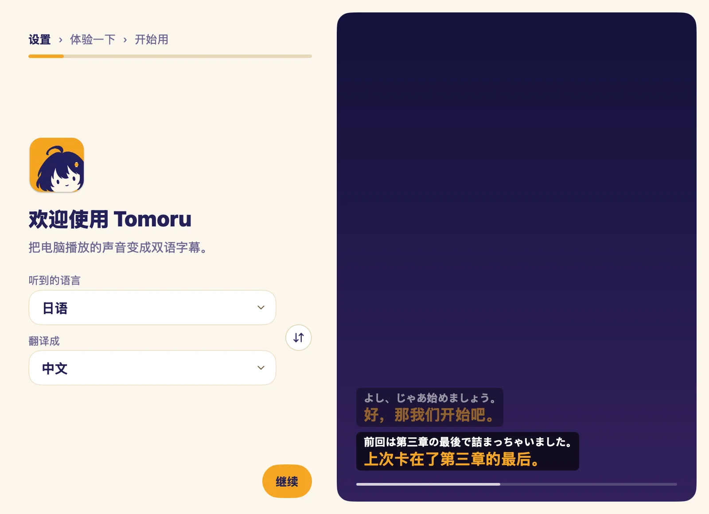

浮在任何画面上
视频、直播、游戏、会议，字幕都在最上层。可以拖动、缩放；锁定后，点击会直接穿过字幕；录屏时也能自动隐藏。
Tomoru 直接听电脑播放的声音，把外语实时变成双语字幕，浮在任何画面上。外语直播、生肉番剧、VTuber、游戏、会议都能用，不用配置虚拟声卡。
为什么用 Tomoru
不挑播放器，不挑网站，也不挑游戏。只要电脑里有声音，就有字幕。
视频、直播、游戏、会议，字幕都在最上层。可以拖动、缩放；锁定后，点击会直接穿过字幕；录屏时也能自动隐藏。
不用麦克风，也不用装虚拟声卡。可以听系统的全部声音，也可以只听一个应用，比如边打游戏边只听浏览器里的直播。
识别和翻译都能在本机离线运行，也能用云端：自带免费的云端翻译，也能接你自己的 API。选本机时，声音和文字不会离开你的电脑。
工作原理
语音识别最多支持 30 种语言（取决于所选识别引擎），翻译支持 31 种语言互译。原文是白色，译文是灯笼的琥珀色。
听电脑正在播放的声音，或只听你选的那个应用。
皆さん、こんばんは。
把说的话识别成原文，边说边出字。
皆さん、こんばんは。
大家晚上好。
翻译成你选的语言，和原文一起浮在屏幕上。
细节
抢先翻译
说话的人还没说完，Tomoru 先给出前半句的大意；整句说完，再换成完整译文。看直播不用干等。
翻译场景和专名对照表
语音识别容易把角色名听成近音词（把 メテオ 听成 メデオ），翻译也常把名字按字面硬翻（把 クラウド 译成「云」）。给常看的番剧、主播或游戏建一个场景，名字会保持统一，听错的原文也会一起改对。接上你自己的 API，还能从字幕记录里学到新名字。
翻译屏幕上的文字
没配音的游戏对话、视频里的招牌、直播间弹幕：按 ⌥⇧S（Windows 为 Alt+Shift+S）框选一块屏幕，或者先截图再按快捷键。用的是你选的翻译引擎，选本机模型时，图片也在本机翻译。
适合这些时候
みんな、ギフトありがとう！
谢谢大家的礼物！
今夜は、星がよく見えるね。
今晚的星星，看得好清楚。
여러분, 안녕하세요.
大家晚上好。
This boss's second phase is really tough.
这个 Boss 的第二阶段超强的。
Let's circle back on this next week.
这个我们下周再聊。
上手
第一次打开要多一步：macOS 在「系统设置 › 隐私与安全性」里点「仍要打开」；Windows 在 SmartScreen 警告里点「更多信息」，再点「仍要运行」。
也可以在终端里安装，脚本会下载最新版本，校验无误后装好。Mac 上这样装，不用再点「仍要打开」。
curl -fsSL https://github.com/ACAne0320/Tomoru/releases/latest/download/install.sh | sh
irm https://github.com/ACAne0320/Tomoru/releases/latest/download/install.ps1 | iex
引导会带你选听到的语言、要翻译成的语言，用哪个本地引擎识别，以及用本机还是云端翻译。
引导里会播一段示例直播，字幕出来就说明一切就绪。之后 Tomoru 待在菜单栏，随时开始、停止。

隐私
只听电脑播放的声音，从不使用麦克风。声音从不保存。
本地识别和本地翻译都在你的电脑上完成。用云端引擎时，数据只发给你选的服务。
打开后，原文和译文只存在你的电脑上，随时可以删除。
只在检查更新时连接 GitHub，下载模型时连接 Hugging Face 或 ModelScope。
Tomoru 和 ルビ
app 的名字来自看板娘 Tomoru（ともる），一个提着纸灯笼的女孩：灯る 是「点亮」的意思。她头顶的企鹅叫 ルビ（Rubi），名字取自标在难字上方、帮人读懂的那行小字。
没在翻译时，她们在菜单栏里打瞌睡；开始翻译，就一起醒过来。
常见问题
不要。Tomoru 免费，代码以 GPL-3.0 开源。自带的云端翻译免费；云端语音识别要用你自己的 API key，按服务商的价格计费。只用本机引擎就完全不花钱。
macOS 26 或更新（Apple 芯片），以及 Windows 11（x64）。
语音识别最多支持 30 种语言（取决于所选识别引擎），翻译支持 31 种语言互译。界面有简体中文、繁体中文、英文、日文和韩文。
都不用。Tomoru 直接听电脑播放的声音，从不使用麦克风。
Tomoru 还没有经过 Apple 公证，Windows 版也没有签名。macOS：打开「系统设置 › 隐私与安全性」，点 Tomoru 旁边的「仍要打开」。Windows：SmartScreen 警告时，点「更多信息」，再点「仍要运行」。用终端命令安装的话，macOS 不会拦。
可以在设置里打开「录屏时隐藏字幕」，字幕就只给你自己看。